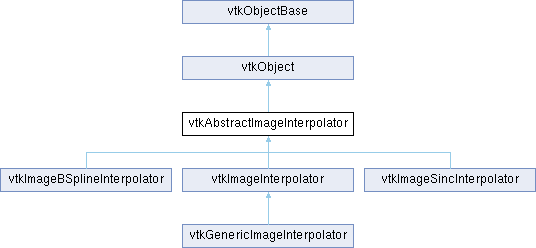

|
Etrek
|
|
Etrek
|
interpolate data values from images More...
#include <vtkAbstractImageInterpolator.h>

Public Member Functions | |
| vtkTypeMacro (vtkAbstractImageInterpolator, vtkObject) | |
| void | PrintSelf (ostream &os, vtkIndent indent) override |
| virtual void | Initialize (vtkDataObject *data) |
| virtual void | ReleaseData () |
| void | DeepCopy (vtkAbstractImageInterpolator *obj) |
| virtual void | Update () |
| double | Interpolate (double x, double y, double z, int component) |
| bool | Interpolate (const double point[3], double *value) |
| void | SetOutValue (double outValue) |
| double | GetOutValue () |
| void | SetTolerance (double tol) |
| double | GetTolerance () |
| void | SetComponentOffset (int offset) |
| int | GetComponentOffset () |
| void | SetComponentCount (int count) |
| int | GetComponentCount () |
| int | ComputeNumberOfComponents (int inputComponents) |
| int | GetNumberOfComponents () |
| void | SetSlidingWindow (bool x) |
| void | SlidingWindowOn () |
| void | SlidingWindowOff () |
| bool | GetSlidingWindow () |
| virtual void | ComputeSupportSize (const double matrix[16], int support[3])=0 |
| virtual bool | IsSeparable ()=0 |
| virtual void | FreePrecomputedWeights (vtkInterpolationWeights *&weights) |
| void | InterpolateIJK (const double point[3], double *value) |
| void | InterpolateIJK (const float point[3], float *value) |
| bool | CheckBoundsIJK (const double x[3]) |
| bool | CheckBoundsIJK (const float x[3]) |
| void | SetBorderMode (vtkImageBorderMode mode) |
| void | SetBorderModeToClamp () |
| void | SetBorderModeToRepeat () |
| void | SetBorderModeToMirror () |
| vtkImageBorderMode | GetBorderMode () |
| const char * | GetBorderModeAsString () |
| virtual void | PrecomputeWeightsForExtent (const double matrix[16], const int extent[6], int checkExtent[6], vtkInterpolationWeights *&weights) |
| virtual void | PrecomputeWeightsForExtent (const float matrix[16], const int extent[6], int checkExtent[6], vtkInterpolationWeights *&weights) |
| void | InterpolateRow (vtkInterpolationWeights *&weights, int xIdx, int yIdx, int zIdx, double *value, int n) |
| void | InterpolateRow (vtkInterpolationWeights *&weights, int xIdx, int yIdx, int zIdx, float *value, int n) |
| vtkGetVector3Macro (Spacing, double) | |
| vtkGetVectorMacro (Direction, double, 9) | |
| vtkGetVector3Macro (Origin, double) | |
| vtkGetVector6Macro (Extent, int) | |
| Public Member Functions inherited from vtkObject | |
| vtkBaseTypeMacro (vtkObject, vtkObjectBase) | |
| virtual void | DebugOn () |
| virtual void | DebugOff () |
| bool | GetDebug () |
| void | SetDebug (bool debugFlag) |
| virtual void | Modified () |
| virtual vtkMTimeType | GetMTime () |
| void | PrintSelf (ostream &os, vtkIndent indent) override |
| void | RemoveObserver (unsigned long tag) |
| void | RemoveObservers (unsigned long event) |
| void | RemoveObservers (const char *event) |
| void | RemoveAllObservers () |
| vtkTypeBool | HasObserver (unsigned long event) |
| vtkTypeBool | HasObserver (const char *event) |
| vtkTypeBool | InvokeEvent (unsigned long event) |
| vtkTypeBool | InvokeEvent (const char *event) |
| std::string | GetObjectDescription () const override |
| unsigned long | AddObserver (unsigned long event, vtkCommand *, float priority=0.0f) |
| unsigned long | AddObserver (const char *event, vtkCommand *, float priority=0.0f) |
| vtkCommand * | GetCommand (unsigned long tag) |
| void | RemoveObserver (vtkCommand *) |
| void | RemoveObservers (unsigned long event, vtkCommand *) |
| void | RemoveObservers (const char *event, vtkCommand *) |
| vtkTypeBool | HasObserver (unsigned long event, vtkCommand *) |
| vtkTypeBool | HasObserver (const char *event, vtkCommand *) |
| template<class U, class T> | |
| unsigned long | AddObserver (unsigned long event, U observer, void(T::*callback)(), float priority=0.0f) |
| template<class U, class T> | |
| unsigned long | AddObserver (unsigned long event, U observer, void(T::*callback)(vtkObject *, unsigned long, void *), float priority=0.0f) |
| template<class U, class T> | |
| unsigned long | AddObserver (unsigned long event, U observer, bool(T::*callback)(vtkObject *, unsigned long, void *), float priority=0.0f) |
| vtkTypeBool | InvokeEvent (unsigned long event, void *callData) |
| vtkTypeBool | InvokeEvent (const char *event, void *callData) |
| virtual void | SetObjectName (const std::string &objectName) |
| virtual std::string | GetObjectName () const |
| Public Member Functions inherited from vtkObjectBase | |
| const char * | GetClassName () const |
| virtual vtkTypeBool | IsA (const char *name) |
| virtual vtkIdType | GetNumberOfGenerationsFromBase (const char *name) |
| virtual void | Delete () |
| virtual void | FastDelete () |
| void | InitializeObjectBase () |
| void | Print (ostream &os) |
| void | Register (vtkObjectBase *o) |
| virtual void | UnRegister (vtkObjectBase *o) |
| int | GetReferenceCount () |
| void | SetReferenceCount (int) |
| bool | GetIsInMemkind () const |
| virtual void | PrintHeader (ostream &os, vtkIndent indent) |
| virtual void | PrintTrailer (ostream &os, vtkIndent indent) |
| virtual bool | UsesGarbageCollector () const |
Protected Member Functions | |
| virtual void | InternalUpdate ()=0 |
| virtual void | InternalDeepCopy (vtkAbstractImageInterpolator *obj)=0 |
| void | CoordinateToIJK (const double point[3], double ijk[3]) |
| virtual void | GetInterpolationFunc (void(**doublefunc)(vtkInterpolationInfo *, const double[3], double *)) |
| virtual void | GetInterpolationFunc (void(**floatfunc)(vtkInterpolationInfo *, const float[3], float *)) |
| virtual void | GetRowInterpolationFunc (void(**doublefunc)(vtkInterpolationWeights *, int, int, int, double *, int)) |
| virtual void | GetRowInterpolationFunc (void(**floatfunc)(vtkInterpolationWeights *, int, int, int, float *, int)) |
| virtual void | GetSlidingWindowFunc (void(**doublefunc)(vtkInterpolationWeights *, int, int, int, double *, int)) |
| virtual void | GetSlidingWindowFunc (void(**floatfunc)(vtkInterpolationWeights *, int, int, int, float *, int)) |
| Protected Member Functions inherited from vtkObject | |
| void | RegisterInternal (vtkObjectBase *, vtkTypeBool check) override |
| void | UnRegisterInternal (vtkObjectBase *, vtkTypeBool check) override |
| void | InternalGrabFocus (vtkCommand *mouseEvents, vtkCommand *keypressEvents=nullptr) |
| void | InternalReleaseFocus () |
| Protected Member Functions inherited from vtkObjectBase | |
| virtual void | ReportReferences (vtkGarbageCollector *) |
| vtkObjectBase (const vtkObjectBase &) | |
| void | operator= (const vtkObjectBase &) |
Protected Attributes | |
| vtkDataArray * | Scalars |
| double | StructuredBoundsDouble [6] |
| float | StructuredBoundsFloat [6] |
| int | Extent [6] |
| double | Spacing [3] |
| double | Direction [9] |
| double | InverseDirection [9] |
| double | Origin [3] |
| double | OutValue |
| double | Tolerance |
| vtkImageBorderMode | BorderMode |
| int | ComponentOffset |
| int | ComponentCount |
| bool | UseDirection |
| bool | SlidingWindow |
| vtkInterpolationInfo * | InterpolationInfo |
| void(* | InterpolationFuncDouble )(vtkInterpolationInfo *info, const double point[3], double *outPtr) |
| void(* | InterpolationFuncFloat )(vtkInterpolationInfo *info, const float point[3], float *outPtr) |
| void(* | RowInterpolationFuncDouble )(vtkInterpolationWeights *weights, int idX, int idY, int idZ, double *outPtr, int n) |
| void(* | RowInterpolationFuncFloat )(vtkInterpolationWeights *weights, int idX, int idY, int idZ, float *outPtr, int n) |
| Protected Attributes inherited from vtkObject | |
| bool | Debug |
| vtkTimeStamp | MTime |
| vtkSubjectHelper * | SubjectHelper |
| std::string | ObjectName |
| Protected Attributes inherited from vtkObjectBase | |
| std::atomic< int32_t > | ReferenceCount |
| vtkWeakPointerBase ** | WeakPointers |
Additional Inherited Members | |
| Static Public Member Functions inherited from vtkObject | |
| static vtkObject * | New () |
| static void | BreakOnError () |
| static void | SetGlobalWarningDisplay (vtkTypeBool val) |
| static void | GlobalWarningDisplayOn () |
| static void | GlobalWarningDisplayOff () |
| static vtkTypeBool | GetGlobalWarningDisplay () |
| Static Public Member Functions inherited from vtkObjectBase | |
| static vtkTypeBool | IsTypeOf (const char *name) |
| static vtkIdType | GetNumberOfGenerationsFromBaseType (const char *name) |
| static vtkObjectBase * | New () |
| static void | SetMemkindDirectory (const char *directoryname) |
| static bool | GetUsingMemkind () |
| Static Protected Member Functions inherited from vtkObjectBase | |
| static vtkMallocingFunction | GetCurrentMallocFunction () |
| static vtkReallocingFunction | GetCurrentReallocFunction () |
| static vtkFreeingFunction | GetCurrentFreeFunction () |
| static vtkFreeingFunction | GetAlternateFreeFunction () |
interpolate data values from images
vtkAbstractImageInterpolator provides an abstract interface for interpolating image data. You specify the data set you want to interpolate values from, then call Interpolate(x,y,z) to interpolate the data.
|
inline |
Check an x,y,z point to see if it is within the bounds for the structured coords of the image. This is meant to be called prior to InterpolateIJK. The bounds that are checked against are the input image extent plus the tolerance.
| int vtkAbstractImageInterpolator::ComputeNumberOfComponents | ( | int | inputComponents | ) |
Compute the number of output components based on the ComponentOffset, ComponentCount, and the number of components in the input data.
|
pure virtual |
Get the support size for use in computing update extents. If the data will be sampled on a regular grid, then pass a matrix describing the structured coordinate transformation between the output and the input. Otherwise, pass nullptr as the matrix to retrieve the full kernel size.
Implemented in vtkImageBSplineInterpolator, vtkImageInterpolator, and vtkImageSincInterpolator.
|
protected |
Convert XYZ coordinate to IJK continuous index
| void vtkAbstractImageInterpolator::DeepCopy | ( | vtkAbstractImageInterpolator * | obj | ) |
Copy the interpolator. It is possible to duplicate an interpolator by calling NewInstance() followed by DeepCopy().
|
virtual |
Free the weights that were provided by PrecomputeWeightsForExtent.
Reimplemented in vtkImageBSplineInterpolator, vtkImageInterpolator, and vtkImageSincInterpolator.
|
protectedvirtual |
Get the interpolation functions.
Reimplemented in vtkGenericImageInterpolator, vtkImageBSplineInterpolator, vtkImageInterpolator, and vtkImageSincInterpolator.
| int vtkAbstractImageInterpolator::GetNumberOfComponents | ( | ) |
Get the number of components that will be returned when Interpolate() is called. This is only valid after initialization. Before then, use ComputeNumberOfComponents instead.
|
protectedvirtual |
Get the row interpolation functions.
Reimplemented in vtkGenericImageInterpolator, vtkImageBSplineInterpolator, vtkImageInterpolator, and vtkImageSincInterpolator.
|
protectedvirtual |
Get the sliding window interpolation functions.
|
virtual |
Initialize the interpolator with the data that you wish to interpolate.
|
protectedpure virtual |
Subclass-specific copy.
Implemented in vtkImageBSplineInterpolator, vtkImageInterpolator, and vtkImageSincInterpolator.
|
protectedpure virtual |
Subclass-specific updates.
Implemented in vtkImageBSplineInterpolator, vtkImageInterpolator, and vtkImageSincInterpolator.
| bool vtkAbstractImageInterpolator::Interpolate | ( | const double | point[3], |
| double * | value ) |
Sample the input data. This is an inline method that calls the function that performs the appropriate interpolation for the data type. If the point is not within the bounds of the data set, then the return value is false, and each component will be set to the OutValue.
| double vtkAbstractImageInterpolator::Interpolate | ( | double | x, |
| double | y, | ||
| double | z, | ||
| int | component ) |
Get the result of interpolating the specified component of the input data, which should be set to zero if there is only one component. If the point is not within the bounds of the data set, then OutValue will be returned. This method is primarily meant for use by the wrapper languages.
|
inline |
A version of Interpolate that takes structured coords instead of data coords. Structured coords are the data coords after subtracting the Origin and dividing by the Spacing.
|
inline |
Get a row of samples, using the weights that were precomputed by PrecomputeWeightsForExtent. Note that each sample may have multiple components. It is possible to select which components will be returned by setting the ComponentOffset and ComponentCount.
|
pure virtual |
True if the interpolation is separable, which means that the weights can be precomputed in order to accelerate the interpolation. Any interpolator which is separable will implement the methods PrecomputeWeightsForExtent and InterpolateRow
Implemented in vtkImageBSplineInterpolator, vtkImageInterpolator, and vtkImageSincInterpolator.
|
virtual |
If the data is going to be sampled on a regular grid, then the interpolation weights can be precomputed. A matrix must be supplied that provides a transformation between the provided extent and the structured coordinates of the input. This matrix must perform only permutation, scale, and translation, i.e. each of the three columns must have only one non-zero value. A checkExtent is provided that can be used to check which indices in the extent map to out-of-bounds coordinates in the input data.
Reimplemented in vtkImageBSplineInterpolator, vtkImageInterpolator, and vtkImageSincInterpolator.
|
overridevirtual |
Methods invoked by print to print information about the object including superclasses. Typically not called by the user (use Print() instead) but used in the hierarchical print process to combine the output of several classes.
Reimplemented from vtkObjectBase.
Reimplemented in vtkGenericImageInterpolator, vtkImageBSplineInterpolator, vtkImageInterpolator, and vtkImageSincInterpolator.
|
virtual |
Release any data stored by the interpolator.
| void vtkAbstractImageInterpolator::SetBorderMode | ( | vtkImageBorderMode | mode | ) |
The border mode (default: clamp). This controls how out-of-bounds lookups are handled, i.e. how data will be extrapolated beyond the bounds of the image. The default is to clamp the lookup point to the bounds. The other modes wrap around to the opposite boundary, or mirror the image at the boundary.
| void vtkAbstractImageInterpolator::SetComponentCount | ( | int | count | ) |
This method specifies the number of components to extract. The default value is -1, which extracts all available components. When the interpolation is performed, this will be clamped to the number of available components.
| void vtkAbstractImageInterpolator::SetComponentOffset | ( | int | offset | ) |
This method specifies which component of the input will be interpolated, or if ComponentCount is also set, it specifies the first component. When the interpolation is performed, it will be clamped to the number of available components.
| void vtkAbstractImageInterpolator::SetOutValue | ( | double | outValue | ) |
The value to return when the point is out of bounds.
| void vtkAbstractImageInterpolator::SetSlidingWindow | ( | bool | x | ) |
Enable sliding window for separable kernels. When this is enabled, the interpolator will cache partial sums in in order to accelerate the computation. It only makes sense to do this if the interpolator is used by calling InterpolateRow() while incrementing first the Y, and then the Z index with every call.
| void vtkAbstractImageInterpolator::SetTolerance | ( | double | tol | ) |
The tolerance to apply when checking whether a point is out of bounds. This is a fractional distance relative to the voxel size, so a tolerance of 1 expands the bounds by one voxel.
|
virtual |
Update the interpolator. If the interpolator has been modified by a Set method since Initialize() was called, you must call this method to update the interpolator before you can use it.
Reimplemented in vtkGenericImageInterpolator.
| vtkAbstractImageInterpolator::vtkGetVector3Macro | ( | Origin | , |
| double | ) |
Get the origin of the data being interpolated.
| vtkAbstractImageInterpolator::vtkGetVector3Macro | ( | Spacing | , |
| double | ) |
Get the spacing of the data being interpolated.
| vtkAbstractImageInterpolator::vtkGetVector6Macro | ( | Extent | , |
| int | ) |
Get the extent of the data being interpolated.
| vtkAbstractImageInterpolator::vtkGetVectorMacro | ( | Direction | , |
| double | , | ||
| 9 | ) |
Get the direction of the data being interpolated.